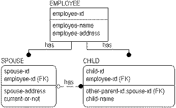

In the following example, the �employee-id� attribute migrates to the CHILD entity through two relationships: one with EMPLOYEE and the other with SPOUSE. You might expect that the foreign key attribute would appear twice in the CHILD entity as a result. Since the attribute �employee-id� was already present in the key area of CHILD, it is not repeated in the entity even though it is part of the key of SPOUSE.

This combining of two identical foreign key attributes migrated from the same base attribute through two or more relationships is called unification. In the example, �employee-id�was part of the primary key of CHILD (contributed by the �has� relationship from EMPLOYEE) and was also a non-key attribute of CHILD (contributed by the �has� relationship from SPOUSE). Since both foreign key attributes are the identifiers of the same EMPLOYEE, it is better that the attribute appears only once. Unification is implemented automatically when this situation occurs.
The rules used to implement unification include:
Accordingly, you can override the unification of foreign keys, when necessary, by assigning rolenames. If you want the same foreign key to appear two or more times in a child entity, you can add a rolename to each foreign key attribute.